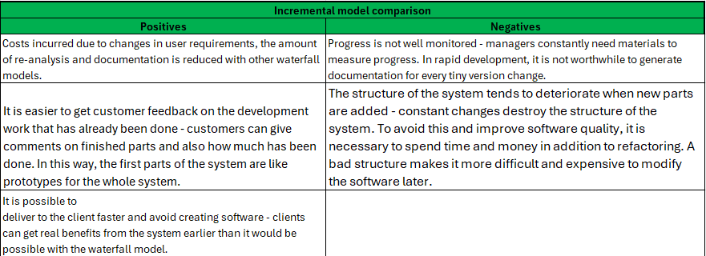

Inkrementaalne arendus on etapiviisiline ja ajagraafikut järgiv strateegia, kus süsteemi erinevaid osi arendatakse erinevatel aegadel ja erineva kiirusega ning kui üks osa valmis saab, integreeritakse see juba valmis süsteemiga.
Tarkvara spetsifikatsioon, projekt ja teostus jaotatakse osadeks, mida ükshaaval arendama. Sel viisil väheneb ümbertegemist vajavate süsteemi osade hulk ja kliendid saavad võimaluse oma soove pikema aja vältel ringi mõelda.
Tegevuste käik on järgmine: kõigepealt määratakse nõuded üldisemal kujul ning nad jaotatakse tähtsamateks ja vähemtähtsateks. Järgnevalt määratakse tarneosad - mitme tarnena ja millest koosnevana klient oma tarkvara saama hakkab. Tarne all mõeldakse süsteemi osa ehk inkrementi. Iga tarne peab lisama süsteemile kindla funktsionaalsuse. Sealjuures tootmist alustatakse kõrgema prioriteediga osadest. Kui süsteemi osad on määratud, võetakse ette 1. osa ja hakatakse seda detailiseerima, kasutades selleks sobivaimat protsessi (ja miks ka mitte koskmudelit). Samaaegselt saab täpsustada teiste osade nõudeid, kuid töös oleva osa nõuded on külmutatud. Kui väga vaja, pöördutakse selle osa juurde tagasi hiljem. Kui osa saab valmis, tarnitakse see kliendile, kes saab selle töösse rakendada (või vähemalt seda tõsiselt katsetada). See aitab kliendil täpsustada nõudeid järgmiste osade jaoks (või sama osa hilisemate versioonide tarvis). Seejärel võetakse käsile järgmine osa. Uued osad liidestatakse olemasoleva süsteemiga. Kõiki osi ei pea arendama sama protsessi kasutades.

Antud mudel võib olla nii plaanipärane kui ka paindlik ning sellel on järgnevad omadused:
